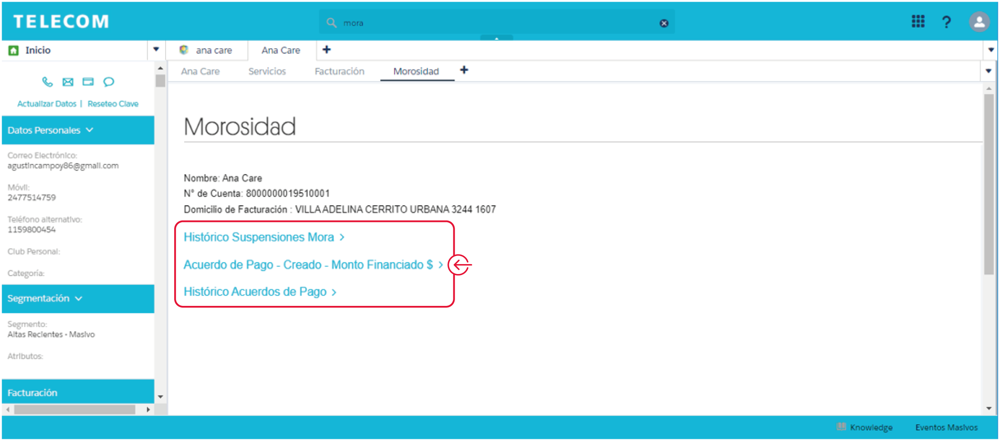

Línea sin suspensiones
En la Vista Inicial podremos verificar si la línea de un cliente se encuentra activa o suspendida por mora.
Detalle de mora
Desde la solapa “Facturación”, ingresando al botón “Morosidad” podrás verificar el detalle de la mora del cliente:
Una vez dentro de la solapa “Morosidad” podremos ver el histórico de suspensiones por mora y los acuerdos de pago creados para el cliente (este último punto lo veremos más adelante):
Histórico de suspensiones por mora
Dentro de este botón podremos ver el detalle de las suspensiones históricas del servicio (fecha, motivo, servicio afectado).
Cuenta sin proceso de mora abierto
Si la cuenta no tiene proceso de mora abierto visualizarás el saldo deudor en color verde.
*Suspensión Parcial por mora: Hot 1 | Suspensión Total por mora: Hot 2
Cuenta con proceso de mora abierto
En el caso de que la Cuenta tenga proceso de mora abierto los posibles estados podrán ser:
En todos los casos podrás ver a partir de qué fecha se encuentra en cada estado.
Suspensión por mora: Proporcionales
Como te contamos antes, en #Fan no se cobrarán proporcionales por gestiones como cambio de plan, alta, portabilidad o suspensiones, etc.
La excepción a esta regla se da cuando una línea se suspende por falta de pago y se rehabilita después de haber comenzado su ciclo. En ese caso se le otorgarán los beneficios del plan y se le cobrarán los proporcionales por estos días.
Otra de las gestiones que cobrará proporcionales es el Cambio de Ciclo (si este se efectúa después de haber comenzado el ciclo).